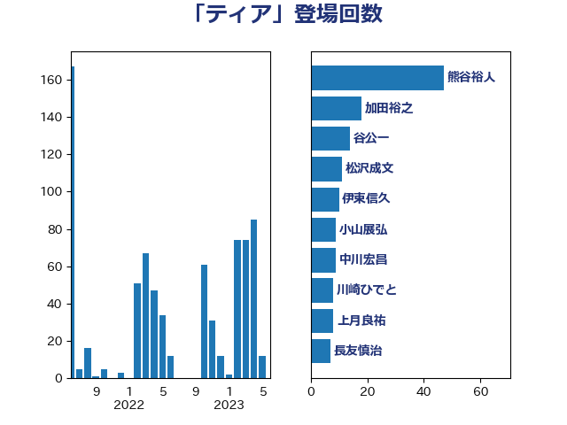

単語「ティア」

| 熊谷裕人 | 立憲民主党 | 47 回 |
| 加田裕之 | 自由民主党 | 18 回 |
| 谷公一 | 自由民主党 | 14 回 |
| 松沢成文 | 日本維新の会 | 11 回 |
| 伊東信久 | 日本維新の会 | 10 回 |
| 小山展弘 | 立憲民主党 | 9 回 |
| 中川宏昌 | 公明党 | 9 回 |
| 川崎ひでと | 自由民主党 | 8 回 |
| 上月良祐 | 自由民主党 | 8 回 |
| 長友慎治 | 国民民主党 | 7 回 |
| 礒崎哲史 | 国民民主党 | 7 回 |
| 湯原俊二 | 立憲民主党 | 7 回 |
| 森山浩行 | 立憲民主党 | 7 回 |
| 山下芳生 | 日本共産党 | 7 回 |
| 吉川元 | 立憲民主党 | 7 回 |
| 加藤勝信 | 自由民主党 | 7 回 |
| 一谷勇一郎 | 日本維新の会 | 7 回 |
| 須藤元気 | 無所属 | 6 回 |
| 荒井優 | 立憲民主党 | 6 回 |
| 牧義夫 | 立憲民主党 | 6 回 |
| 津島淳 | 自由民主党 | 6 回 |
| 木村英子 | れいわ新選組 | 6 回 |
| 木原誠二 | 自由民主党 | 6 回 |
| 丸川珠代 | 自由民主党 | 6 回 |
| 穀田恵二 | 日本共産党 | 5 回 |
| 梅谷守 | 立憲民主党 | 5 回 |
| 柚木道義 | 立憲民主党 | 5 回 |
| 市村浩一郎 | 日本維新の会 | 5 回 |
| 小寺裕雄 | 自由民主党 | 5 回 |
| 塩村あやか | 立憲民主党 | 5 回 |
| 塩川鉄也 | 日本共産党 | 5 回 |
| ながえ孝子 | 無所属 | 5 回 |
| 芳賀道也 | 国民民主党 | 4 回 |
| 田村憲久 | 自由民主党 | 4 回 |
| 大野敬太郎 | 自由民主党 | 4 回 |
| 伊藤孝恵 | 国民民主党 | 4 回 |
| 井出庸生 | 自由民主党 | 4 回 |
| 鈴木義弘 | 国民民主党 | 3 回 |
| 鈴木庸介 | 立憲民主党 | 3 回 |
| 菅家一郎 | 自由民主党 | 3 回 |
| 臼井正一 | 自由民主党 | 3 回 |
| 篠原孝 | 立憲民主党 | 3 回 |
| 永岡桂子 | 自由民主党 | 3 回 |
| 森本真治 | 立憲民主党 | 3 回 |
| 末松信介 | 自由民主党 | 3 回 |
| 木村次郎 | 自由民主党 | 3 回 |
| 早坂敦 | 日本維新の会 | 3 回 |
| 庄子賢一 | 公明党 | 3 回 |
| 平林晃 | 公明党 | 3 回 |
| 平木大作 | 公明党 | 3 回 |
| 平山佐知子 | 無所属 | 3 回 |
| 川田龍平 | 立憲民主党 | 3 回 |
| 岡本あき子 | 立憲民主党 | 3 回 |
| 山際大志郎 | 自由民主党 | 3 回 |
| 山田勝彦 | 立憲民主党 | 3 回 |
| 山岸一生 | 立憲民主党 | 3 回 |
| 山井和則 | 立憲民主党 | 3 回 |
| 小林茂樹 | 自由民主党 | 3 回 |
| 堀場幸子 | 日本維新の会 | 3 回 |
| 和田有一朗 | 日本維新の会 | 3 回 |
| 吉井章 | 自由民主党 | 3 回 |
| 前川清成 | 日本維新の会 | 3 回 |
| 八木哲也 | 自由民主党 | 3 回 |
| 佐藤英道 | 公明党 | 3 回 |
| 中川貴元 | 自由民主党 | 3 回 |
| 高橋克法 | 自由民主党 | 2 回 |
| 青木愛 | 立憲民主党 | 2 回 |
| 門山宏哲 | 自由民主党 | 2 回 |
| 野田佳彦 | 立憲民主党 | 2 回 |
| 輿水恵一 | 公明党 | 2 回 |
| 衛藤晟一 | 自由民主党 | 2 回 |
| 葉梨康弘 | 自由民主党 | 2 回 |
| 秋葉賢也 | 自由民主党 | 2 回 |
| 福島みずほ | 社会民主党 | 2 回 |
| 福山哲郎 | 立憲民主党 | 2 回 |
| 神津たけし | 立憲民主党 | 2 回 |
| 石原正敬 | 自由民主党 | 2 回 |
| 石井章 | 日本維新の会 | 2 回 |
| 田村智子 | 日本共産党 | 2 回 |
| 田村まみ | 国民民主党 | 2 回 |
| 猪口邦子 | 自由民主党 | 2 回 |
| 浅野哲 | 国民民主党 | 2 回 |
| 河西宏一 | 公明党 | 2 回 |
| 櫛渕万里 | れいわ新選組 | 2 回 |
| 森田俊和 | 立憲民主党 | 2 回 |
| 梅村みずほ | 日本維新の会 | 2 回 |
| 根本幸典 | 自由民主党 | 2 回 |
| 林芳正 | 自由民主党 | 2 回 |
| 松野明美 | 日本維新の会 | 2 回 |
| 松本剛明 | 自由民主党 | 2 回 |
| 杉尾秀哉 | 立憲民主党 | 2 回 |
| 末松義規 | 立憲民主党 | 2 回 |
| 徳永エリ | 立憲民主党 | 2 回 |
| 川合孝典 | 国民民主党 | 2 回 |
| 山口壯 | 自由民主党 | 2 回 |
| 小熊慎司 | 立憲民主党 | 2 回 |
| 小沢雅仁 | 立憲民主党 | 2 回 |
| 大西健介 | 立憲民主党 | 2 回 |
| 大島九州男 | れいわ新選組 | 2 回 |
| 大串正樹 | 自由民主党 | 2 回 |
| 城井崇 | 立憲民主党 | 2 回 |
| 坂井学 | 自由民主党 | 2 回 |
| 吉田久美子 | 公明党 | 2 回 |
| 倉林明子 | 日本共産党 | 2 回 |
| 伊藤岳 | 日本共産党 | 2 回 |
| 仁木博文 | 無所属 | 2 回 |
| 井野俊郎 | 自由民主党 | 2 回 |
| 井坂信彦 | 立憲民主党 | 2 回 |
| 井上哲士 | 日本共産党 | 2 回 |
| 中川正春 | 立憲民主党 | 2 回 |
| 世耕弘成 | 自由民主党 | 2 回 |
| 鰐淵洋子 | 公明党 | 1 回 |
| 高橋光男 | 公明党 | 1 回 |
| 音喜多駿 | 日本維新の会 | 1 回 |
| 青島健太 | 日本維新の会 | 1 回 |
| 阿部司 | 日本維新の会 | 1 回 |
| 長妻昭 | 立憲民主党 | 1 回 |
| 金子道仁 | 日本維新の会 | 1 回 |
| 野間健 | 立憲民主党 | 1 回 |
| 野田国義 | 立憲民主党 | 1 回 |
| 遠藤良太 | 日本維新の会 | 1 回 |
| 道下大樹 | 立憲民主党 | 1 回 |
| 近藤昭一 | 立憲民主党 | 1 回 |
| 近藤和也 | 立憲民主党 | 1 回 |
| 谷川とむ | 自由民主党 | 1 回 |
| 西銘恒三郎 | 自由民主党 | 1 回 |
| 西野太亮 | 自由民主党 | 1 回 |
| 西村明宏 | 自由民主党 | 1 回 |
| 藤木眞也 | 自由民主党 | 1 回 |
| 藤岡隆雄 | 立憲民主党 | 1 回 |
| 舩後靖彦 | れいわ新選組 | 1 回 |
| 舟山康江 | 国民民主党 | 1 回 |
| 自見はなこ | 自由民主党 | 1 回 |
| 羽田次郎 | 立憲民主党 | 1 回 |
| 紙智子 | 日本共産党 | 1 回 |
| 米山隆一 | 立憲民主党 | 1 回 |
| 竹内真二 | 公明党 | 1 回 |
| 穂坂泰 | 自由民主党 | 1 回 |
| 稲富修二 | 立憲民主党 | 1 回 |
| 石川大我 | 立憲民主党 | 1 回 |
| 石原宏高 | 自由民主党 | 1 回 |
| 石井浩郎 | 自由民主党 | 1 回 |
| 石井拓 | 自由民主党 | 1 回 |
| 畦元将吾 | 自由民主党 | 1 回 |
| 田島麻衣子 | 立憲民主党 | 1 回 |
| 田名部匡代 | 立憲民主党 | 1 回 |
| 田中健 | 国民民主党 | 1 回 |
| 清水貴之 | 日本維新の会 | 1 回 |
| 深澤陽一 | 自由民主党 | 1 回 |
| 浜田聡 | NHK党 | 1 回 |
| 泉健太 | 立憲民主党 | 1 回 |
| 河野太郎 | 自由民主党 | 1 回 |
| 池田佳隆 | 自由民主党 | 1 回 |
| 武見敬三 | 自由民主党 | 1 回 |
| 櫻井周 | 立憲民主党 | 1 回 |
| 梅村聡 | 日本維新の会 | 1 回 |
| 松本洋平 | 自由民主党 | 1 回 |
| 松下新平 | 自由民主党 | 1 回 |
| 本田太郎 | 自由民主党 | 1 回 |
| 早稲田ゆき | 立憲民主党 | 1 回 |
| 日下正喜 | 公明党 | 1 回 |
| 斎藤嘉隆 | 立憲民主党 | 1 回 |
| 岸田文雄 | 自由民主党 | 1 回 |
| 山田太郎 | 自由民主党 | 1 回 |
| 山添拓 | 日本共産党 | 1 回 |
| 山本香苗 | 公明党 | 1 回 |
| 山崎誠 | 立憲民主党 | 1 回 |
| 山口那津男 | 公明党 | 1 回 |
| 山口晋 | 自由民主党 | 1 回 |
| 山下雄平 | 自由民主党 | 1 回 |
| 小野泰輔 | 日本維新の会 | 1 回 |
| 小西洋之 | 立憲民主党 | 1 回 |
| 小沼巧 | 立憲民主党 | 1 回 |
| 小池晃 | 日本共産党 | 1 回 |
| 小川淳也 | 立憲民主党 | 1 回 |
| 小倉將信 | 自由民主党 | 1 回 |
| 宮下一郎 | 自由民主党 | 1 回 |
| 安江伸夫 | 公明党 | 1 回 |
| 太栄志 | 立憲民主党 | 1 回 |
| 大塚耕平 | 国民民主党 | 1 回 |
| 塩田博昭 | 公明党 | 1 回 |
| 堀内詔子 | 自由民主党 | 1 回 |
| 国定勇人 | 自由民主党 | 1 回 |
| 吉田統彦 | 立憲民主党 | 1 回 |
| 吉田とも代 | 日本維新の会 | 1 回 |
| 古賀之士 | 立憲民主党 | 1 回 |
| 古川禎久 | 自由民主党 | 1 回 |
| 友納理緒 | 自由民主党 | 1 回 |
| 勝部賢志 | 立憲民主党 | 1 回 |
| 加藤竜祥 | 自由民主党 | 1 回 |
| 住吉寛紀 | 日本維新の会 | 1 回 |
| 伊佐進一 | 公明党 | 1 回 |
| 串田誠一 | 日本維新の会 | 1 回 |
| 中田宏 | 自由民主党 | 1 回 |
| 中川康洋 | 公明党 | 1 回 |
| 中島克仁 | 立憲民主党 | 1 回 |
| 中山展宏 | 自由民主党 | 1 回 |
| 下野六太 | 公明党 | 1 回 |
| 上田英俊 | 自由民主党 | 1 回 |
| 上田清司 | 国民民主党 | 1 回 |
| 三浦靖 | 自由民主党 | 1 回 |
| 三浦信祐 | 公明党 | 1 回 |
| あべ俊子 | 自由民主党 | 1 回 |